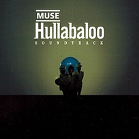

|
Showbiz
Origin Of Simmetry
Hullabaloo
Absolution
Black Holes and Revelations
HAARP
The Resistance
2nd Law
|
MUSE - HULLABALOO SOUNDTRACK
|

|
- Ano de Lançamento: 2002
- Gravadora: Taste/Mushroom
- Genero: Rock Alternativo, Música Exprimental, New Prog e Space Rock
- Produtor: Paul Reeve, John Leckie, Matthew Bellamy e John Cornfield
|
FAIXAS
CD.1
- 1.Forced In
- 2.Shrinking Universe
- 3.Recess
- 4.Yes Please
- 5.Map of Your Head
- 6.Nature_1
- 7.Shine Acoustic
- 8.Ashamed
- 9.The Gallery
- 10.Hyper Chondriac Music
CD 2
- 1.Dead Star
- 2.Micro Cuts
- 3.Citizen Erased
- 4.Showbiz
- 5.Megalomania
- 6.Dark Shines
- 7.Screenager
- 8.Space Dementia
- 9.In Your World
- 10.Muscle Museum
- 11.Agitated
CRÍTICA
|
|